“阿基米德致多西修斯（Dositheus）．
前些日子，你让我写出那些问题的证明，这些证明我已给了科农（Conon）．实际上，它们主要依赖这些定理（其证明我已送给你了），即（1）任一球面是该球大圆的4倍；（2）任一球冠的面等于一个圆，这圆的半径等于从球冠顶点到其底圆所连的线段；（3）以球的大圆为底，其高等于球的直径的圆柱是球的3/2，它的面（包括两底）是球面的3/2，以及（4）任一立体扇形等于一个圆锥，该圆锥的底是与包含在球扇形中的球缺面相等的圆，其高等于球的半径．以这些定理为依据的定理或问题，我已写在附上的书中；那些用一种不同类的研究方法发现的，即涉及螺线和劈锥曲面的，我将尽快给你送去．
其第一个问题如下：给定一个球，找一个平面的面积等于球面．
从上述定理，它的解法是显然的．盖因球大圆的4倍既是平面面积又等于球面．
第二个问题如下．”
命题1 （问题）给定一个圆锥或圆柱，求作一球，使它的体积等于该圆锥或该圆柱的体积．
如果V是给定的圆锥或圆柱体积，我们能够作一圆柱，使其体积等于
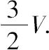
．设这个圆柱的底是以AB为直径的圆，其高是OD．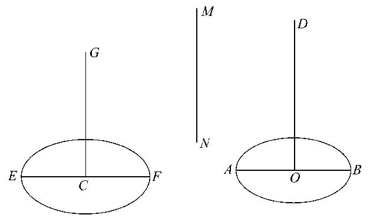
现在，如果我们能作出另一圆柱，它等于圆柱（OD），且使得它的高等于它的底的直径，这个问题就被解决了．因为后一圆柱等于
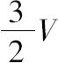
，于是直径等于后一圆柱的高（或底的直径）的球即为所求的球［Ⅰ.34推论］．假设问题已解决，设圆柱（CG）等于圆柱（OD），而底的直径EF等于高CG．
因为两相等圆柱的高与底成反比例，
AB2：EF2＝CG：OD
＝EF：OD． （1）
假设MN是满足下式的一线段：
EF2＝AB·MN， （2）
因此 AB：EF＝EF：MN，
由（1）和（2），我们有
AB：MN＝EF：OD，
或 AB：EF＝MN：OD．
所以 AB：EF＝EF：MN＝MN：OD，
即EF，MN是AB，OD之间的两比例中项．
因此，问题综合如下，取AB，OD之间的两比例中项EF，MN，并作一圆柱，底为以EF为直径的圆，其高CG等于EF．则，因为
AB：EF＝EF：MN＝MN：OD，
EF2＝AB·MN，
所以 AB2：EF2＝AB：MN
＝EF：OD
＝CG：OD．
由此知，两圆柱（OD），（CG）的底与其高成反比例．
所以两圆柱相等，且得到
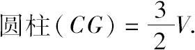
从而以EF为直径的球就等于V，即为所求的球．
命题2 如果BAB'是一个球缺，BB'是球缺底的直径，O为球心，且球的直径AA'交BB'于M，那么球缺的体积等于以球缺的底为底，高为h的圆锥体积，其中h满足
h：AM＝（OA'+A'M）：A'M．
沿MA量得MH等于h，又沿MA'量得MH'等于h'，这里
h'：A'M＝（OA+AM）：AM．
假设所作三个圆锥分别以O，H，H'为其顶点，球缺的底BB'为其公共底．连接AB，A'B．
设C为一圆锥，其底等于球缺BAB'的表面，即等于以AB为半径的圆［Ⅰ.42］，其高等于OA．
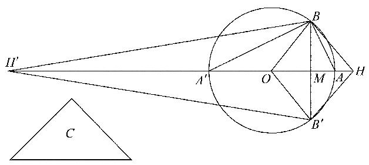
那么圆锥C等于球扇形OBAB'. ［Ⅰ.44］
现在，因为 HM：MA＝（OA'+A'M）：A'M，
由分比， HA：MA＝OA：A'M，
交换内项， HA：OA＝MA：A'M，
于是
HO：OA＝AA'：A'M=AB2：BM2
＝圆锥C的底：以BB'为直径的圆．
但是OA等于圆锥C的高；因为底与高成反比例的两圆锥相等，所以可得圆锥C（或球扇形OBAB'）等于一个圆锥，该圆锥的底是以BB'为直径的圆，其高等于OH．
且这后一圆锥等于同底，其高分别为OM，MH的两圆锥之和，即等于立体菱形OBHB'．
因此球扇形OBAB'等于立体菱形OBHB'．
去掉公共部分，即圆锥OBB'，就有
球缺BAB'＝圆锥HBB'．
类似地，用同样的方法，我们能证明
球缺BA'B'＝圆锥H'BB'．
后一性质的另一种证明．
设D是其底等于整个球面，其高等于OA的圆锥．
这样D就等于球的体积． ［Ⅰ.33，34］
另外，因为（OA'+A'M）：A'M＝HM：MA，
如前，由分比和交换内项，就有
OA：AH＝A'M：MA．
又因为 H'M：MA'＝（OA+AM）：AM，就有
H'A'：OA＝A'M：MA
＝OA：AH，从上述结果．
由合比， H'O：OA＝OH：HA， （1）
交换内项， H'O：OH＝OA：HA， （2）
由合比， H'H：OH＝OH：HA
＝H'O：OA，由（1），
于是 HH'·OA＝H'O·OH， （3）
其次，因为 H'O：OH＝OA：AH，由（2）
＝A'M：MA，
（H'O+OH）2：H'O·OH＝（A'M+MA）2：A'M·MA，
由（3），就有
HH'2：HH'·OA＝AA'2：A'M·MA，
或 HH'：OA＝AA'2：BM2．
现在等于此球的圆锥D有底为半径等于AA'的圆和高等于OA的线段．
因此，这个圆锥D等于一个以BB'为直径的圆作底，其高等于HH'；
所以 圆锥D＝立体菱形HBH'B'，
或 立体菱形HBH'B＝球．
但是 球缺BAB'＝圆锥HBB'，
所以剩下的球缺BA'B'＝圆锥H'BB'．
推论 球缺BAB'同与它同底等高的圆锥之比等于（OA'+A'M）与A'M之比．
命题3 （问题）用一平面截给定的球，使得两球冠面积之比为已知比．
假设问题已解决．设AA'是球大圆的直径，又设垂直于AA'的平面交大圆面于直线BB'，且交AA'于M，又它分割球使得球冠BAB'的面积与球冠BA'B'的面积之比为已知比．
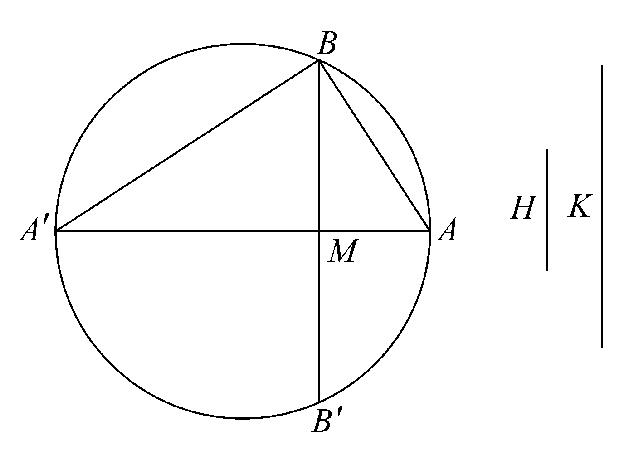
现在这两面分别等于以AB，A'B为半径的圆． ［Ⅰ.42，43］
因此AB2：A'B2等于已知比，即AM与MA'之比为已知比．
于是综合证明如下．
如果H：K是已知比，分AA'于M使得
AM：MA'＝H：K．
于是 AM：MA'＝AB2：A'B2
＝半径为AB的圆：半径为A'B的圆
＝球冠BAB'的面：球冠BA'B'的面．
这样两球冠面积的比等于H：K．
命题4 （问题）用一平面截给定的球，使得两球缺的体积之比为已知比．
假设问题已解决，设与大圆ABA'成直角的所求平面交大圆于BB'．设大圆直径AA'垂直平分BB'（在M点），且O是球心．
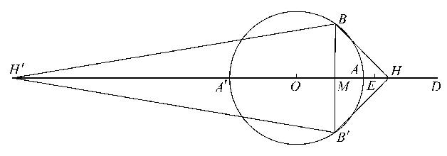
在OA的延长线上取一点H，在OA'延线上取一点H'，使得
（OA'+A'M）：A'M＝HM：MA， （1）
（OA+AM）：AM＝H'M：MA'， （2）
连接BH，B'H，BH'，B'H'．
于是圆锥HBB'，H'BB'分别等于球缺BAB'，BA'B'． ［命题2］
因此两圆锥之比和它们高之比都是已知比，即
HM：H'M＝已知比． （3）
现在我们有三个方程（1），（2），（3），在其中出现了3个待定的点M，H，H'；根据它们的表示，首先要求另一个方程，使其在其中这些点仅有一个（M）出现，即是说，我们必须消去H，H'．
现在由（3），显然HH'：H'M也是一个已知比；阿基米德的消去法是，寻找每一个比A'H'：H'M与HH'：H'A'之值，这值皆和H'，H无关，其次使这两个比的复合比等于已知比HH'：A'M的值．
（a） 求A'H'：H'M的值．
从方程（2）易得
A'H'：H'M＝OA：（OA+AM）． （4）
（b） 求HH'：A'H'的值．
从（1）我们推得
A'M：MA＝（OA'+A'M）：HM
＝OA'：AH； （5）
又从（2），A'M：MA＝H'M：（OA+AM）
＝A'H'：OA． （6）
于是 HA：AO＝OA'：A'H'，
因此 OH：OA'＝OH'：A'H'，
或 OH：OH'＝OA'：A'H'．
由此推得
HH'：OH'＝OH'：H'A'，
或 HH'·H'A'＝OH'2．
所以 HH'：H'A'＝OH'2：H'A'2
＝AA'2：A'M2，依（6）
（c）我们作下述的图，以便更简单地表示A'H'：H'M和HH'：H'M．延长OA到D，使得OA＝AD.（D将超过H，因为A'M＞MA，所以由（5），有OA＞AH．）
则 A'H'：H'M＝OA：（OA+AM）
＝AD：DM． （7）
现在分AD于E，使得
HH'：H'M＝AD：DE． （8）
然后利用（7），（8）和上面已求的HH'：H'A'的值，我们有
AD：DE＝HH'：H'M
＝（HH'：H'A'）·（A'H'：H'M）
＝（AA'2：A'M2）·（AD：DM）．
但是 AD：DE＝（DM：DE）·（AD：DM）．
所以 MD：DE＝AA'2：A'M2． （9）
且D是已知的，因为AD＝OA．AD：DE（等于HH'：H'M）也是已知的．所以DE是已知的．
因此问题本身转化为分A'D于M为两部分，使得下式成立．
MD：一个已知长＝一个已知面：A'M2．
阿基米德附言“如果问题按这个一般形式被提出，它需要一个
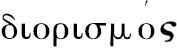
［即必须研究可能性的限度］，但如果加上这个目前情况下存在的条件，它就不要求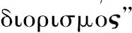
．在目前情况下这问题为：
给定一线段A'A延长到D，使A'A＝2AD，在AD上取一点E，截AA'于一点M，使得
AA'2：A'M2＝MD：DE．
“这两个问题的分析与综合将在末尾给出．”[1]
主要问题的综合如下．设R：S是已知比，R小于S．AA'是一个大圆的直径，O是圆心，延长OA到D，使得OA＝AD，在E点分AD使得
AE：ED＝R：S．
然后在M点截AA'，使得
MD：DE＝AA'2：A'M2．
过M直立一平面垂直于AA'，这个平面将分球为两个球缺，且使两部分之比如同R：S．
在A'A方向上取一点H，在AA'方向上取一点H'，使得
（OA'+A'M）：A'M＝HM：MA， （1）
（OA+AM）：AM＝H'M：MA'． （2）
那么我们必须证明这个
HM：MH'＝R：S，或AE：ED．
（α）我们首先求HH'：H'A'如下．
如在分析（b）中已证明的，
HH'·H'A'＝OH'2，
或 HH'：H'A'＝OH'2：H'A'2
＝AA'2：A'M2
＝MD：DE，由作图．
（β）其次，我们有
H'A'：H'M＝OA：（OA+AM）
＝AD：DM．
所以 HH'：H'M＝（HH'：H'A'）·（H'A'：H'M）
＝（MD：DE）·（AD：DM）
＝AD：DE，
由此得 HM：MH'＝AE：ED
＝R：S．
证完
附注 由命题4的原问题所化约成的辅助问题（阿基米德曾说要给出一个讨论的），其解法是由欧托西乌斯（Eutocius）在一个颇有兴味同时又很重要的附注中给出的，他在下面的阐释中引进了这个论题．
“他［阿基米德］允诺在最后给出这问题的一个解，但是在任何稿本中我们没有找到其解．我们发现狄俄尼索多罗（Dionysodorus）也未能弄清所允诺的讨论（因为没能找到被略掉的引理），他用另一种方法去解决原问题，这种方法我将在以后描述．狄俄克利斯（Diocles）也在他的著作
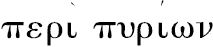
中表示了‘他认为阿基米德虽说过，但未作出证明’的意见，并试图自己补充省掉的部分，他所给出的，我也将顺次给出．然而，可以看到狄俄克利斯所补充的部分与那省掉的讨论无关，而只是像狄俄尼索多罗那样给出了一个讨论框架，这是用另一种证明方法得到的．另一方面，作为不懈的、广泛的探求的结果，我在一本老书中发现了一些定理讨论着、虽然由于一些错误而显得不够清晰（以及各种各样的文、图的错误），这些被讨论的定理却给出了我要寻求的东西，而且还在一定程度上保留了阿基米德习用的Doric方言，同时还保留着过去习用的一些名词：抛物线被称为直角圆锥的截线，双曲线是钝角圆锥的截线；因此我考虑到：是否这些定理实际上就是他要在最后所允诺的．因此我仔细加以考查，并在克服了（由于上述诸多错误所致的）困难之后，我逐渐弄清了原意，并试着用大家更熟悉、更清楚的语句把它写出来．并且，首先这定理将做一般的处理，应使对阿基米德所说的‘关于可能性的限度’可以搞清楚，随后即有对这些条件的特殊应用，这些条件是他在对这问题的分析中所陈述的．”这个随后的研究可以重述如下．
一般问题是：
已知两线段AB，AC和一个面积D，分割AB于M点，使得
AM：AC＝D：MB2．
分析
假设M已求得，作AC与AB成直角，连接CM延长之．过B作EBN平行于AC交CM于N，过C作CHE平行AB交EBN于E．完成矩形CENF，又过M作PMH平行于AC交FN于P．
沿EN量EL使得
CE·EL（或AB·EL）＝D．
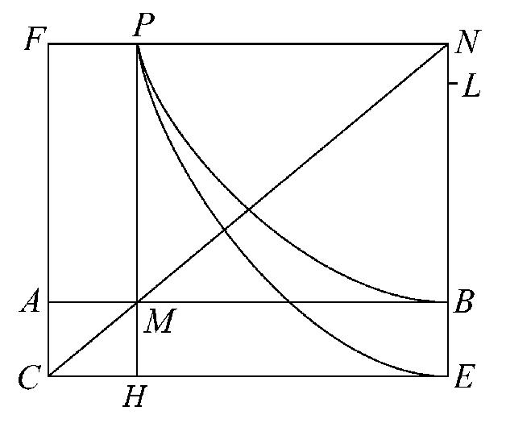
于是，由假设，
AM：AC＝CE·EL：MB2．
和 AM：AC＝CE：EN，
由相似三角形，
＝CE·EL：EL·EN．
由上推得
PN2＝MB2＝EL·EN．
因此，如果过顶点E作一个抛物线，EN为轴，参数等于EL，那么抛物线将过P；它的位置将被确定，因为EL是给定的．
所以P在已知的抛物线上．
其次因为两矩形FH，AE相等，于是
FP·PH＝AB·BE．
因此，如果以CE，CF为渐近线，且过B作一双曲线，它也将过P点，且双曲线的位置是确定的．
所以P在已知的双曲线上．因为P确定，M也就给定了．
这样P由抛物线和双曲线的交点所确定．
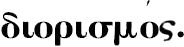
现在，因为 AM：AC＝D：MB2，
AM·MB2＝AC·D．
但AC·D已给定，而以后将证明：AM·MB2的最大值是它当BM＝2AM时所取的值．
因此，AC·D不大于
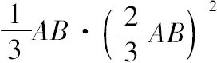
，或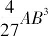
是能有一个解的必要条件．综合
如果O是AB上且满足BO＝2AO的点，为了可能有解，我们已看到
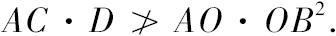
这样AC·D等于或小于AO·OB2．
（1）若AC·D＝AO·OB2，则问题有解．
（2）设AC·D小于AO·OB2．
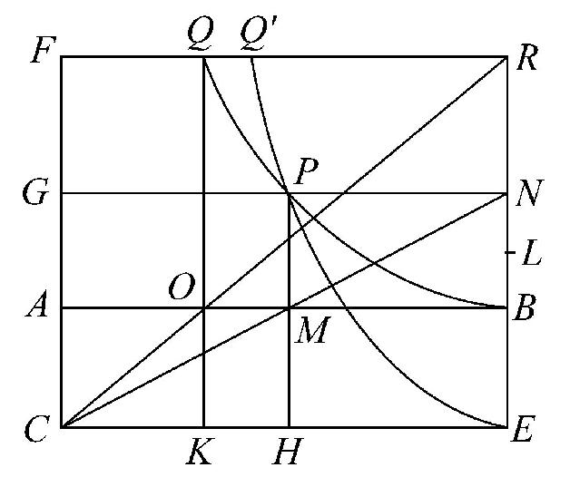
作AC与AB成直角．连接CO，且延长到R．过B作EBR平行于AC，且交CO于R，过C作CE平行于AB交EBR于E．完成矩形CERF，且过O作QOK平行于AC，且分别交FR，CE于Q和K．
因为AC·D＜AO·OB2，沿着RQ量得RQ'使得
AC·D＝AO·Q'R2，
或 AO：AC＝D：Q'R2．
沿着ER量EL使得
D＝CE·EL（或AB·EL）．
现在，因为AO：AC＝D：Q'R2，由假设，
＝CE·EL：Q'R2，
且 AO：AC＝CE：ER，由相似三角形，
＝CE·EL：EL·ER，
由此推得 Q'R2＝EL·ER．
作具有顶点E，轴ER，且参数等于EL的一抛物线．这个抛物线将过Q'．
又 矩形FK＝矩形AE，
或 FQ·QK＝AB·BE；
如果以CE，CF为渐近线且过B作一个矩形的双曲线，它也将通过Q．
设抛物线和双曲线交于P，过P作PMH平行于AC分别交AB，CE于M和H，作GPN平行于AB且分别交CF，ER于G和N．
于是M就是所求的分点．
因为 PG·PH＝AB·BE，
矩形GM＝矩形ME，
所以CMN是一条直线．
于是 AB·BE＝PG·PH＝AM·EN． （1）
又由抛物线的性质，
PN2＝EL·EN，
或 MB2＝EL·EN． （2）
由（1）和（2），
AM：EL＝AB·BE：MB2，
或 AM·AB：AB·EL＝AB·AC：MB2．
交换内项，
AM·AB：AB·AC＝AB·EL：MB2，
或 AM：AC＝D：MB2．
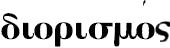
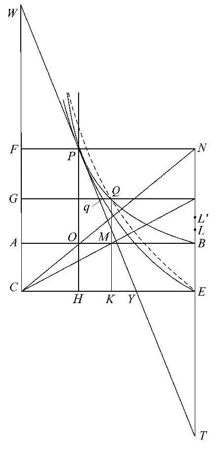
余下的是证明：若AB在O点使得BO＝2AO，则AO·OB2是AM·MB2的最大值，或
AO·OB2＞AM·MB2．
这里M是AB上不同于O的任一点．
假设 AO：AC＝CE·EL'：OB2，
于是 AO·OB2＝CE·EL'·AC．
连接CO延长到N；过B作EBN平行于AC，完成平行四边形CENF．
过O作POH平行于AC，且分别交FN，CE于P和H．
以E为顶点，EN为轴和以EL'为参数作一个抛物线．这将过P，如以上分析所示，除P而外还将交此抛物线之直径CF于某点．
其次，作一个带有渐近线CE，CF的矩形的双曲线，且过B点．如前分析所示，这双曲线也将过P．
延长NE到T，使得TE＝EN．连接TP交CE于Y，且延长它使交CF于W．于是TP将与抛物线切于P．
因为 BO＝2AO，
TP＝2PW，
和 TP＝2PY，
所以 PW＝PY．
于是，因为在两渐近线间的WY被P平分，它交双曲线之点，WY是双曲线的一个切线．
因此，在P点有共同切线的双曲线和抛物线彼此相切于P．
现在在AB上任取一点M，过M作QMK平行于AC且交双曲线于Q，交CE于K．最后，过Q作GqQR平行于AB交CF于G，交抛物线于q，交EN于R．
由双曲线的性质，因为两矩形GK，AE相等，那么CMR是一直线．
由抛物线的性质，
qR2＝EL'·ER，
于是 QR2＜EL'·ER．
假设 QR2＝EL·ER，
我们有 AB：AC＝CE：ER
＝CE·EL：EL·ER
＝CE·EL：QR2
＝CE·EL：MB2，
或 AM·MB2＝CE·EL·AC．
所以 AM·MB2＜CE·EL'·AC
＜AO·OB2．
如果AC·D＜AO·OB2，因为抛物线和双曲线相交于两点，所以有两解．
如果我们作一个带有顶点E和轴EN，且参数等于EL的抛物线，该抛物线将过Q点（看上页图）；由于此抛物线还交直径CF（除交Q外），它必须与双曲线再次相交（它以CF作为它的渐近线）．
［如果我们记AB＝a，BM＝x，AC＝c和D＝b2，可看出比例式
AM：AC＝D：MB2
等价于方程式
x2（a-x）＝b2c，
它是一个缺少x一次项的三次方程式．
现在假设EN，EC是坐标轴，EN是y轴．
那么上面解所用的抛物线是
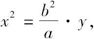
而矩形的双曲线是
y（a-x）＝ac．
于是，这三次方程的解以及没有正解，或有一个正解，或有两个正解的条件，利用两个圆锥曲线而得到．］
为了叙述的完整性，以及对它们的兴趣，命题4的由狄俄尼索多罗和狄俄克利斯所给出的解，在这里补上．
狄俄尼索多罗的解
设AA'是已知球的直径，需求一平面截AA'于直角（设在一点M处），使得截得的两球缺之比为已知比CD：DE．
延长A'A到F，使得AF＝OA，这里O是球心．
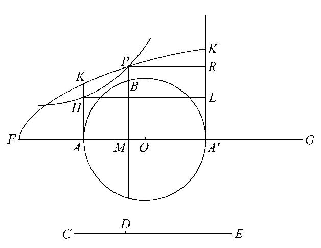
作AH垂直于AA'，其长满足
FA：AH＝CE：ED，
且延长AH到K使得
AK2＝FA·AH． （α）
作一个顶点为F，轴为FA以及参数等于AH的抛物线，由等式（α）它将过K点．
作A'K'平行于AK且交抛物线于K'；作以A'F，A'K为渐近线且过H的矩形双曲线．这个双曲线将交抛物线于一点P，它在K和K'之间．
作PM垂直于AA'且交大圆于B，B'，从H，P作HL，PR平行于AA'且分别交A'K'于L，R．
于是，由双曲线的性质，
PR·PM＝AH·HL，
即 PM·MA'＝HA·AA'，
或 PM：AH＝AA'：A'M，
和 PM2：AH2＝AA'2：A'M2．
由抛物线的性质，也有
PM2＝FM·AH，
即 FM：PM＝PM：AH，
或 FM：AH＝PM2：AH2
＝AA'2：A'M2，从前式．
因为两圆之比如同它们半径的平方比，以A'M为半径的圆为底，以高等于FM的圆锥和以AA'为半径的圆为底，以高等于AH的圆锥，它们的底和高成反比例．
因此两圆锥相等；亦即如果我们用符号c（A'M），FM表示第一个圆锥，其他同样表示，那么
c（A'M），FM＝c（AA'），AH．
现在
［c（AA'），FA］：［c（AA'），AH］＝FA：AH
＝CE：ED，由作图．
所以
［c（AA'），FA］：［c（A'M），FM］＝CE：ED． （β）
但是（1） c（AA'），FA＝球． ［Ⅰ.34］
（2）c（A'M），FM能够证明等于以A'为顶点，以A'M为高的该球的球缺．
为此，在AA'上取一点G，使得
GM：MA'＝FM：MA
＝（OA+AM）：AM．
于是圆锥GBB'等于球缺A'BB'． ［命题2］
并且 FM：MG＝AM：MA'，由假设，
＝BM2：A'M2．
所以
以BM为半径的圆：以A'M为半径的圆
＝FM：MG，
于是 c（A'M），FM＝c（BM），MG
＝球缺A'BB'．
从等式（β），我们有
球：球缺A'BB'＝CE：ED，
因此 球缺ABB'：球缺A'BB'＝CD：DE．
狄俄克利斯的解
狄俄克利斯像阿基米德那样是从在命题2中被证的性质开始的，即如果一个平面垂直截球的直径于M点，且若取H，H'在OA，OA'沿线上分别满足
（OA'+A'M）：A'M＝HM：MA，
（OA+AM）：AM＝H'M：MA'，
则两圆锥HBB'，H'BB'分别等于球缺ABB'和A'BB'．
于是，导出推论为
HA：AM＝OA'：A'M，
H'A'：A'M＝OA：AM.
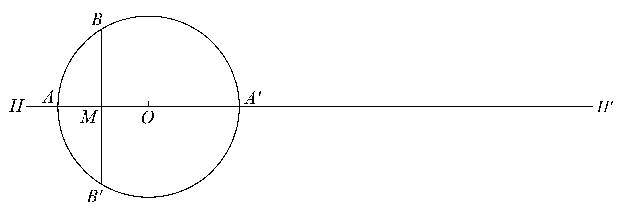
他用下面的形式陈述这个问题，用任给的线段代替OA或OA'，这样稍许扩张了一点：
给定一条线段AA'，它的端点是A，A'，给定一个比C：D，给定另一线段AK；分AA'于M点和在A'A和AA'延长线上分别求一点H，H'，使下面的关系同时成立：
C：D＝HM：MH'， （α）
HA：AM＝AK：A'M， （β）
H'A'：A'M＝AK：AM． （γ）
分析
假设问题已解决，三点M，H和H'已求得．
作AK与AA'成直角，作A'K'平行且等于AK．连接KM，K'M，延长它们分别交K'A'，KA于E，F．连接KK'，过E作EG平行于A'A且交KF于G，过M作QMN平行于AK，且交EG，KK'于Q和N．
现在 HA：AM＝A'K'：A'M，由（β）
＝FA：AM，由相似三角形，
因此 HA＝FA．
类似地 H'A'＝A'E．
其次，
（FA+AM）：（A'K'+A'M）＝AM：A'M
＝（AK+AM）：（EA'+A'M），由相似三角形．
所以 （FA+AM）·（EA'+A'M）
＝（KA+AM）·（K'A'+A'M）．
沿AH取AR，沿A'H'取A'R'，使得
AR＝A'R'＝AK．
因为FA+AM＝HM，EA'+A'M＝MH'，于是我们有
HM·MM'＝RM·MR'． （δ）
［于是，若R落在A和H之间，R'就落在自A'关于H'的另一边，反之亦然．］
现在 C：D＝HM：MH'，由假设，
＝HM·MH'：MH'2
＝RM·MR'：MH'2，由（δ）．
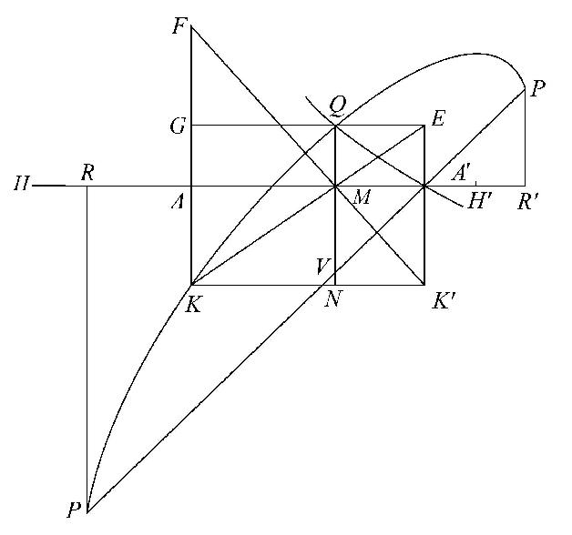
沿MN量MV使得MV＝A'M．连接A'V和向两边延长之．作RP，R'P'垂直于RR'且分别交延长了的A'V于P，P'点．
由平行线性质，
P'V：PV＝R'M：MR．
所以 PV·P'V：PV2＝RM·MR'：RM2．
但是 PV2＝2RM2．
所以 PV·P'V＝2RM·MR'．
又已证 RM·MR'：MH'2＝C：D．
因此 PV·P'V：MH'2＝2C：D．
但是 MH'＝A'M+A'E＝VM+MQ＝QV．
所以 QV2：PV·P'V＝D：2C，是已知比．
这样，如果我们取一线段使得
D：2C＝p：PP'，[2]
如果我们作一个椭圆，它以PP'为一直径，以p作为对应的参数［＝DD'2／PP'，用几何圆锥曲线的普通记法］，这样，使得PP'对坐标倾斜直角的一半，即平行于QV或AK，那么椭圆将过Q点．
因此Q在给定的椭圆上．
又因为EK是平行四边形的对角线，
GQ·QN＝AA'·A'K'．
所以，如果作一个以KG，KK'为渐近线且过A'的矩形双曲线，它也将过Q点．
因此Q在一个给定的矩形双曲线上．
于是Q作为已知的椭圆和已知的双曲线的交点而被求出，所以它是已知的．这样M被给定，以及H，H'同时被求出．
综合
放置AA'，AK成直角，作A'K'平行且等于AK，连接KK'．
作AR（延长了的A'A）和A'R'（延长了的AA'）都等于AK，过R，R'作垂直于RR'的直线．
然后过A'作PP'使得与AA'的交角（AA'P）等于直角的一半，且分别交已作的两垂线于P，P'．
取一个长p，使得
D：2C＝p：PP'．[3]
以PP'作为直径，以p作为对应参数作一个椭圆，使得对于PP'的坐标与它倾斜一个角等于AA'P，即平行于AK．
以KA'，KK'为渐近线，过A'作一个矩形双曲线．
设双曲线和椭圆交于Q，从Q作QMVN垂直于AA'，且分别交AA'，PP'和KK'于M，V和N．作GQE平行于AA'，且分别交AK，A'K'于G，E．
延长KA，K'M交于F．
于是由双曲线的性质．
GQ·QN＝AA'·A'K'，
因为这些矩形相等，所以KME是一直线．
沿AR取AH等于AF，沿A'R'取A'H'等于A'E．
由椭圆的性质，
QV2：PV·P'V＝p：PP'
＝D：2C．
由平行线性质，
PV：P'V＝RM：R'M，
或 PV·P'V：P'V2＝RM·MR'：R'M2，
而P'V2＝2R'M2，因为角RA'P是直角的一半．
所以 PV·P'V＝2RM·MR'，
因此 QV2：2RM·MR'＝D：2C．
但是 QV＝EA'+A'E＝MH'．
所以 RM·MR'：MH'2＝C：D．
又由两相似三角形，
（FA+AM）：（K'A'+A'M）＝AM：A'M
＝（KA+AM）：（EA'+A'M）．
所以
（FA+AM）·（EA'+A'M）＝（KA+AM）·（K'A'+A'M），
或 HM·MH'＝RM·MR'．
由此得出
HM·MH'：MH'2＝C：D，
或 HM：MH'＝C：D． （α）
也有 HA：AM＝FA：AM，
＝A'K'：A'M，由相似三角形， （β）
H'A'：A'M＝EA'：A'M，
＝AK：AM． （γ）
因此点M，H，H'满足三个给定的关系．
命题5 （问题）作一个球缺与一个球缺相似，而与另一个球缺体积相等．
设ABB'是一个球缺，它以A为顶点，其底为以BB'为直径的圆；设DEF'是另一个球缺，它以D为顶点，其底为以EF为直径的圆．设AA'，DD'分别是穿过BB'，EF的大圆的直径．设O，C分别是球心．
设需要作一球缺相似于DEF，且体积等于ABB'的体积．
分析
假设问题已解决，设def是所求的球缺，它以d为顶点，其底为以ef为直径的圆．设dd'是球的直径，它垂直平分ef，c是球心．
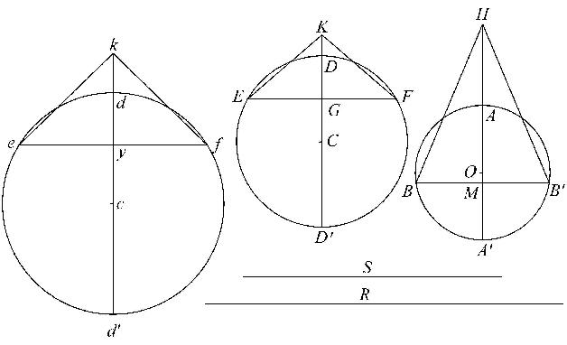
设BB'，EF，ef依次在点M，G，g处被AA'，DD'，dd'垂直平分，使得
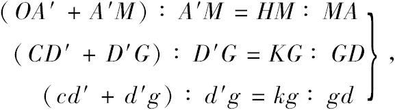
且构成的这些圆锥分别有顶点H，K，k，且其底为球缺的底．则这些圆锥将分别等于对应之球缺． ［命题2］
所以，由假设，
圆锥HBB'＝圆锥kef．
因此
（以BB'为半径的圆）：（以ef为半径的圆）＝kg：HM，
使得 BB'2：ef2＝kg：HM． （1）
但是，因为球缺DEF，def相似，这样圆锥KEF，kef也相似．
所以 KG：EF＝kg：ef．
而比KG：EF是已知的，所以比kg：ef是已知的．
假设取一个线段R使得
kg：ef＝HM：R． （2）
于是R是已知的．
又因为 kg：HM＝BB'2：ef2＝ef：R，由（1）和（2），假设取一个线段S使得
ef2＝BB'·S，
或 BB'2：ef2＝BB'：S．
于是
BB'：ef＝ef：s＝S：R，
ef，S是BB'，R之间成连比例的两个比例中项．
综合
设ABB'，DEF是大圆，BB'，EF，依次在点M，G处被直径AA'，DD'垂直平分，且O，C是球心．
如前那样取H，K，作出圆锥HBB'，KEF，它们就分别等于球缺ABB'，DEF．
设R是一线段，使得
KG：EF＝HM：R，
在BB'，R之间取比例中项ef，S．
以ef为底，作以d为顶点的弓形相似于弓形DEF．完成圆edf，设dd'是过d的直径，C是中心．设想作一个以def为大圆的球，且过ef作一个平面与dd'成直角．
则def将是所求的球缺．
由于两球缺DEF，def是相似的，如同两弓形DEF，def相似．
延长cd到k，使得
（cd'+d'g）：d'g＝kg：gd．
此外，两圆锥KEF，kef相似，
所以
kg：eg＝KG：EF＝HM：R，
于是
kg：HM＝ef：R．
但是，因为BB'，ef，S，R成连比例，
BB'2：ef2＝BB'：S
＝ef：R
＝kg：HM．
这样，圆锥HBB'，kef的底与它们的高成反比．所以两圆锥相等，且def是所求的球缺，它的体积等于圆锥kef． ［命题2］
命题6 （问题）已知两个球缺，求第三个球缺，使其与一个球缺相似，而与另一个球缺有相等的表面．
设ABB'是一个球缺，它的面等于所求球缺的表面，大圆ABA'B'所在平面与球缺ABB'的底成直角且交于BB'．设AA'是垂直平分BB'的直径．
设DEF是一个球缺，它与所求的球缺是相似的，大圆DED'F所在平面与球缺DEF成直角且交于EF，设DD'是垂直平分EF于G的直径．
假设问题已解决，def是一个球缺，它相似于DEF，它的面等于ABB'的面；如同DEF那样，完成图形def，用小写和大写字母分别记对应的各点．
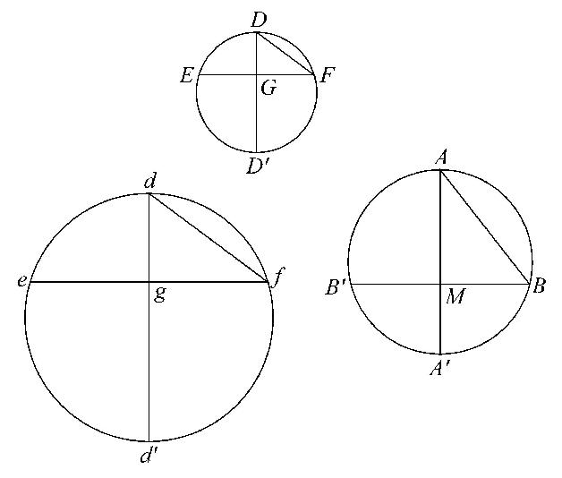
连接AB，DF，df．
现在，因为球缺def，ABB'的表面是相等的，于是以df，AB为直径的两圆也是相等的； ［Ⅰ.42，43］
即 df＝AB．
从两球缺DEF，def相似，我们得到，
d'd：dg＝D'D：DG，
和 dg：df＝DG：DF；
因此 d'd：df＝D'D：DF，
或 d'd：AB＝D'D：DF．
但是AB，D'D，DF都是已知的，
所以d'd是已知的．
因而综合如下，
取d'd使
d'd：AB＝D'D：DF. （1）
画一个以d'd为直径的圆，设想作一个以该圆为大圆的球，在g点分d'd，使得
d'g：gd＝D'G：GD，
过g作一平面垂直于d'd截出一个球缺def，且交大圆于ef．这样两球缺def，DEF相似，
且 dg：df＝DG：DF．
但是，从前式，由合比，
d'd：dg＝D'D：DG．
于是由首末比 d'd：df＝D'D：DF，
因此，由（1）， df＝AB．
因此球缺def的表面等于球缺ABB'的表面［Ⅰ.42，43］，而该球缺也相似于球缺DEF．
命题7 （问题）用一平面从已知球截出一个球缺，使得该球缺与一圆锥有已知比，此圆锥与球缺同底等高．
设AA'是这球一个大圆的直径．需要作一平面与AA'成直角，截出一个球缺ABB'，使得球缺ABB'与圆锥ABB'有已知比．
分析
假设问题已解决，设截面交大圆面于BB'，交直径AA'于M，设O是球心．
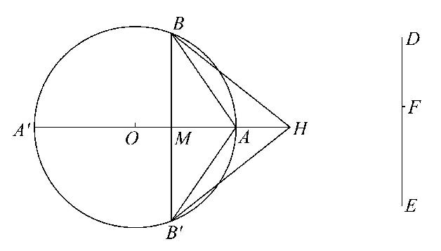
延长OA到H，使得
（OA'+A'M）：A'M＝HM：MA． （1）
于是圆锥HBB'等于球缺ABB'． ［命题2］
所以已知比必等于圆锥HBB'与圆锥ABB'的比，即HM：MA．
因此，（OA'+A'M）：A'M是已知的；所以A'M也是已知的．
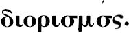
现在 OA'：A'M＞OA'：A'A，
于是 （OA'+A'M）：A'M＞（OA'+A'A）：A'A
＞3：2．
这样，关于此问题可能有解的一个必要条件是已知比大于3：2．
综合
设AA'是球的一个大圆的直径，O是球心．
取一线段DE，且在其上取一点F，使得DE：EF等于已知比，它大于3：2．
现在，因为
（OA'+A'A）：A'A＝3：2，
DE：EF＞（OA'+A'A）：A'A，
于是 DF：FE＞OA'：A'A．
因此，在AA'上能求出一点M，使得
DF：FE＝OA'：A'M． （2）
过M作一平面与AA'成直角，且交大圆面于BB'，并从球截出一个球缺ABB'．
如前，在OA延长线上取一点H，使得
（OA'+A'M）：A'M＝HM：MA．
所以HM：MA＝DE：EF，依（2）．
随即有圆锥HBB'或球缺ABB'与圆锥ABB'的比为已知比DE：EF．
命题8 如果一球被不过中心的平面截得两个球缺A'BB'、ABB'，其中A'BB'是较大的，则比
球缺A'BB'：球缺ABB'
＜（A'BB'的表面）2：（ABB'的表面）2
但是 ＞（A'BB'的表面）3/2：（ABB'的表面）3/2．[4]
设截面成直角地截一个大圆A'BAB'于BB'，且设直径AA'垂直平分BB'于M．
设O是球心．
连接A'B，AB．
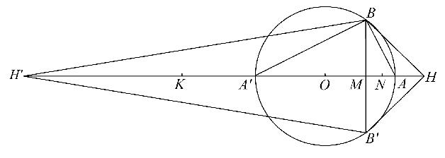
照常，在OA延长线上取H，在OA'延长线上取H'，使得
（OA'+A'M）：A'M＝HM：MA， （1）
（OA+AM）：AM＝H'M：MA'， （2）
且设想作二圆锥分别与二球冠同底，且以H，H'为顶点．两圆锥分别等于两球缺［命题2］，又它们的比是两高HM，H'M之比．
也有
A'BB'的面：ABB'的面＝A'B2：AB2 ［Ⅰ.42，43］
＝A'M：AM．
所以我们需证明：
（a）H'M：MH＜A'M2：MA2，
（b）H'M：MH＞
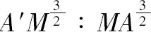
．（a）由（2），
A'M：AM＝H'M：（OA+AM）
＝H'A'：OA'，因为OA＝OA'．
因为A'M＞AM，H'A'＞OA'；所以，如果我们在H'A'上取一点K使得OA'＝A'K，K将在H'和A'之间．
又由（1），
A'M：AM＝KM：MH．
这样 KM：MH＝H'A'：A'K，因为A'K＝OA'，
＞H'M：MK．
所以H'M·MH＜KM2．
由此得出
H'M·MH：MH2＜KM2：MH2，
或H'M：MH＜KM2：MH2
＜A'M2：AM2，由（1）．
（b）因为 OA'＝OA，
A'M·MA＜A'O·OA，
或 A'M：OA'＜OA：AM
＜H'A'：A'M，依（2）．
所以 A'M2＜H'A'·OA'
＜H'A'·A'K．
在A'A延长线上取一点N，使得
A'N2＝H'A'·A'K．
这样 H'A'：A'K＝A'N2：A'K2． （3）
也有 H'A'：A'N＝A'N：A'K，
由合比，
H'N：A'N＝NK：A'K，
因此 A'N2：A'K2＝H'N2：NK2．
所以，由（3），
H'A'：A'K＝H'N2：NK2．
现在H'M：MK＞H'N：NK．
所以
H'M2：MK2＞H'A'：A'K
＞H'A'：OA'
＞A'M：MA，由（2）
＞（OA'+A'M）：MH，由（1）
＞KM：MH．
因此
H'M2：MH2＝（H'M2：MK2）·（KM2：MH2）
＞（KM：MH）·（KM2：MH2）.
由此得出
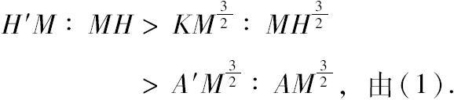
［阿基米德的教程中增加了该命题的另一证明，在这里略去了，因为事实上，这证明既不比前述证明更清晰，也不更短些．］
命题9 （问题）在所有有等表面的球缺中，半球体积最大．
设ABA'B'是球的一个大圆，AA'是直径，O是球心．设球被不过球心的平面所截，该面垂直于AA'（在M点），且交大圆面于BB'．球缺ABB'可以小于半球（如图左），或大于半球（如图右上）．
设DED'E'是另一球的一个大圆，DD'是直径，C是中心．设过C且垂直于DD'的平面截球，并交大圆面于直径EE'．
假设球缺ABB'的表面和半球DEE'的面相等．
因为两面相等，所以AB＝DE． ［Ⅰ.42，43］
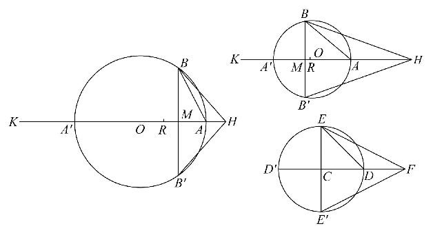
在图左中，AB2＞2AM2和AB2＜2AO2．
在图右上，AB2＜2AM2和AB2＞2AO2．
因此，如果在AA'上取一点R，使得
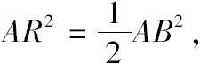
R将在O和M之间．
又因为 AB2＝DE2，于是AR＝CD．
延长OA'到K使得OA'＝A'K，延长A'A到H，使得
A'K：A'M＝HA：AM，
由合比，（A'K+A'M）：A'M＝HM：MA． （1）
于是圆锥HBB'等于球缺ABB'． ［命题2］
又延长CD到F，使得CD＝DF，那么圆锥FEE'将等于半球DEE'． ［命题2］
今AR·RA'＞AM·MA'，
且 AR2＝
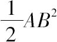
＝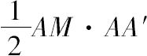
＝AM·A'K．因此
AR·RA'+RA2＞AM·MA'+AM·A'K，
或 AA'·AR＞AM·MK
＞HM·A'M，由（1）．
所以 AA'：A'M＞HM：AR，
或 AB2：BM2＞HM：AR，
即 AR2：BM2＞HM：2AR， 因为AB2＝2AR2，
＞HM：CF．
这样，因为AR＝CD，或CE．
以EE'为直径的圆：以BB'为直径的圆＞HM：CF．
由此得到
圆锥FEE'＞圆锥HBB'，
所以半球DEE'的体积大于球缺ABB'的体积．
[1]见这个命题后面的附注．
[2]这里在希腊原文中有一个错误，似乎躲过了至今所有编辑的注意．这个语句是
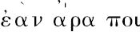
-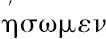
，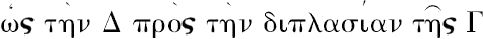
，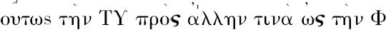
，即，（按上述字义）“如果我们取一长度p使得D：2C＝PP'：p．”这不是正确的，因为我们将有QV2：PV·P'V＝PP'：p，
其实后面的两项被颠倒了，椭圆的正确性质是
QV2：PV·P'V＝p：PP'．［Apollonius Ⅰ.21］
看起来这个错误远在狄俄尼索多罗就出现了，我认为狄俄尼索多罗比狄俄克利斯更可能犯此错误，因为任何一个睿智的数学家在援引别人的著作时都会犯此错误，而不是别人犯了错误自己没注意到．
[3]这里希腊原文重现相同的过失，如前页上的那个注．
[4]这是阿基米德的句子的符号表达式，他说大的球缺与小的球缺的比“小于大球缺的表面与小球缺的表面比的加倍
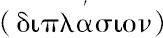
，但是大于那个比的一倍半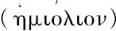
”．